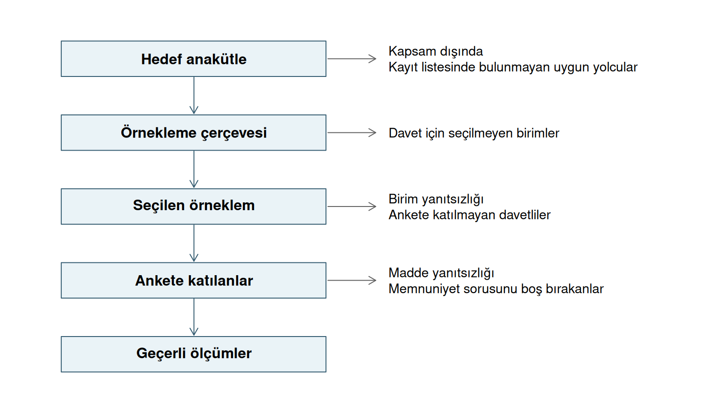
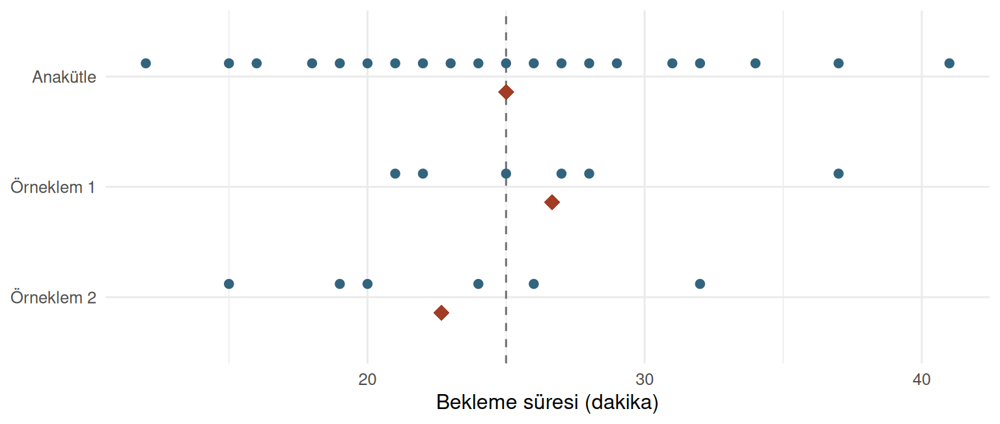
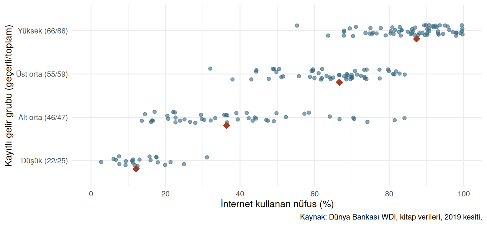

29 İstatistiksel Düşünmeye Giriş
29.1 İstatistiksel Düşünme Nedir?
Bir belediye, internet üzerinden düzenlediği toplu taşıma anketine 1.000 yanıt alıyor. Yanıtlayanların %80’i toplu taşımadan memnun olduğunu belirtiyor. Belediye sonucu “Vatandaşlarımızın %80’i toplu taşımadan memnun” başlığıyla duyuruyor.
Hesap doğru olsa bile başlıktaki “vatandaşlarımızın” sözü yeni bir iddia getiriyor. Ankete kimler erişti? Otobüsü her gün kullananlarla toplu taşımayı çok seyrek kullananların katılma ihtimali benzer miydi? Belediye hizmetlerinden özellikle memnun veya şikâyetçi olanlar ankete daha çok ilgi göstermiş olabilir mi? Sayıyı değerlendirmek için ankete verilen yanıtlar kadar, insanların ankete nasıl ulaştığını da bilmemiz gerekir.
Bin yanıt, ankete katılanların yanıtlarını ayrıntılı incelemeye olanak verir. Benzer özelliklere sahip çok sayıda kişinin katılması ise katılmayan grupları veriye kendiliğinden dahil etmez. Örneğin ankete erişim ağırlıkla belediyenin mobil uygulamasından sağlandıysa, uygulamayı kullanmayan yolcuların görüşleri az duyulmuş olabilir. İstatistiksel düşünme, hesapladığımız değeri araştırma sorusuna, verinin oluşma biçimine ve bu verinin destekleyebileceği iddiaya bağlamayı gerektirir (Gelman vd. 2020).
Yanıtların bir kısmı memnuniyet, bir kısmı memnuniyetsizlik bildiriyorsa gözlenen değişkenlik yolcuların deneyimlerinin farklılaşmasıdır. Aynı hedef topluluktan başka yolcular seçebilseydik memnuniyet oranının ne kadar değişebileceği ise çıkarımsal belirsizlikle ilgilidir. Örneğin bir ankette 80/100, daha büyük bir ankette 800/1.000 memnun yanıtı alınabilir. Her ikisinde de memnun ve memnun olmayan yanıtların oranı aynıdır. Aynı uygun rastgele örnekleme tasarımı altında daha büyük ankette oran genellikle çekimden çekime daha az dalgalanır. Açık internet anketinde ise yanıt sayısı, katılmayan yolcularla aradaki farkı tek başına açıklamaz.
Üç soru böylece birbirine bağlanır. Yanıtlar nasıl değişiyor? Gözlenen sonuçtan hedefe geçerken hangi belirsizliklerle karşılaşıyoruz? İddia, hangi topluluk ve hangi koşullar için geçerli? Son soruya cevap verebilmek için önce “memnuniyet” ile kimi ve hangi deneyimi kastettiğimizi belirlemeliyiz.
Bu bölümün sonunda bir araştırma sorusunu ölçülebilir biçimde kurabilecek, anakütle ve örneklemi aynı problem içinde tanımlayabilecek, bir veriden hangi kapsamda sonuç çıkarılabileceğini açıklayabileceksiniz. R uygulamalarında temel vektör işlemlerinden, Bölüm 11 bölümündeki grup özetlerinden ve Bölüm 21 bölümündeki grafik okuma yaklaşımından yararlanacağız.
29.2 Araştırma Sorusu ve Veri
“Toplu taşımadan memnuniyet ne düzeyde?” sorusuyla başlayalım. Belediye bu bilgiyi hat düzenlemeleri için istiyorsa, son bir ay içinde belediye otobüsünü en az bir kez kullanmış 18 yaş ve üzeri kent sakinlerinin deneyimine odaklanabilir. Örneğin şu soruyu sorabiliriz: “Ekim ayında belediye otobüsünü en az bir kez kullanmış 18 yaş ve üzeri kent sakinlerinin ne kadarı son yolculuğunu ‘memnun’ veya ‘çok memnun’ olarak değerlendiriyor?”
Böyle yazınca hedef anakütle, yani hakkında konuşmak istediğimiz topluluk, kimleri kapsadığını belli eder. Gözlem birimi bir yolcudur. Bir kişinin bir ayda yirmi kez yolculuk yapması ona yirmi yanıt hakkı verirse hesaplanan oran sık yolculuk edenleri daha fazla yansıtır. Yolculukların niteliğini değerlendirmek istediğimiz başka bir araştırmada birim olarak yolculuğu seçebiliriz. Bu iki birim, iki farklı soruya yanıt verir. Analiz birimini satırların neyi temsil ettiği üzerinden Bölüm 19 bölümünde de ele almıştık.
Değişken, her katılımcı için kaydettiğimiz yolculuk memnuniyetidir. Beş sıralı yanıt seçeneği kullanıp üstteki iki seçeneği “memnun” olarak kodlayabiliriz. Bu eşik, yanıtları görmeden belirlenirse sonuca bakarak tanımı değiştirme riski azalır. “Son yolculuğunuzu nasıl değerlendirirsiniz?” ile “Yenilenen araçlarımızdan ne kadar memnunsunuz?” ifadeleri farklı deneyimleri çağrıştırır. İkinci ifade yenilemeye dikkat çekerek yanıtı da yönlendirebilir. Sorunun dili, yanıt seçenekleri, sorunun hangi tarihte ve hangi yolla iletildiği ölçümün parçasıdır.
Zaman da ölçümün anlamını değiştirir. Bir hizmet kesintisinden sonraki hafta alınan yanıtlar o haftanın deneyimini yansıtabilir. Yıl genelini değerlendirmek için farklı dönemlerin kapsanması gerekebilir. Veri toplama başlamadan önce hedef topluluğu, dönemi, ölçüm sorusunu ve sonuçta raporlanacak oranı birlikte belirlemek, aynı sayıdan farklı anlamlar çıkarmayı önler.
29.3 Anakütle, Örneklem, Parametre ve İstatistik
Anakütleyi araştırma sorusu belirler. Bu örnekte birimler yolculardır. Bir pazar araştırmasında işletmeler, kalite denetiminde ürünler, işlem güvenliğinde banka işlemleri, trafik incelemesinde kazalar, hava kalitesi araştırmasında ise belirli bir ölçüm protokolüne göre elde edilebilecek günlük ölçümler birim olabilir. Aynı ulaşım hattında birim yolcu yerine sefer olsaydı hedefimiz, yolcuların deneyimlerinin ortalamasından seferlerin bir özelliğine kayardı.
Yolculara nasıl ulaşacağımızı düşünelim. Bir ulaşım kartı listesi, yolculara davet göndermek için örnekleme çerçevesi olarak kullanılabilir. İyi bir çerçeve, hedef birimlere erişmeyi sağlar. Kişiselleştirilmemiş kartla ödeme yapan yolcular listede kişi olarak bulunmayabilir. Listede güncel olmayan kayıtlar veya aynı kişiye ait birden fazla kart da bulunabilir. Bu yüzden kime ulaşmak istediğimizle, davet için elimizde hangi birimlerin bulunduğunu ayrı ayrı belirleriz.
Listeyi uygunluk ve tekillik açısından denetledikten sonra içinden davet edilecek bir örneklem seçebiliriz. Bazı davetliler ankete hiç katılmaz. Buna birim yanıtsızlığı denir. Ankete katılıp son yolculuk sorusunu boş bırakmak ise madde yanıtsızlığıdır. İki durumda da o kişi için geçerli memnuniyet ölçümü elde edemeyiz. Uygun yolcunun çerçevede yer almaması ile seçildiği halde geçerli yanıt vermemesi farklı aşamalardaki sorunlardır. Şekil 29.1 bu aşamaları planlı bir davet araştırması üzerinden gösteriyor. Açık internet anketindeki gönüllü katılımı ayrıca değerlendireceğiz.
Şimdi küçük bir belediye hattı düşünelim. Öğretim amacıyla yalnızca 20 uygun yolcu olduğunu ve hepsinin son yolculuğuna ait bekleme süresini bildiğimizi varsayalım. 20 ölçümün toplamı 500 dakika ise yolcuların ortalama bekleme süresi 25 dakikadır. Bu değer, tanımladığımız 20 kişilik anakütleye ait bir parametredir. Gerçek bir araştırmada tüm süreleri bilmediğimiz için bu parametreyi bir örneklemden öğrenmeye çalışabiliriz. Örneğin bekleme süreleri 18, 23 ve 31 dakika olan üç yolcunun ortalaması 24 dakikadır. Örneklem verilerinden hesaplanan 24 dakika bir istatistiktir ve anakütle ortalamasının tahmini olarak kullanılabilir. Bu üç süre, aşağıdaki yapay anakütleden elle takip edilebilen bir seçimdir. Örneklem istatistiğini bir anakütle parametresini tahmin etmek için kullanma mantığı, örnekleme yoluyla çıkarımın başlangıç noktasıdır (Ismay ve Kim 2020).
Ortalama için bu ayrımı şöyle yazabiliriz:
\[ \mu = \frac{1}{N}\sum_{i=1}^{N} y_i, \qquad \bar y = \frac{1}{n}\sum_{j=1}^{n} y_{s_j}. \]
Burada \(N\) anakütledeki yolcu sayısı, \(n\) örneklemdeki ölçümlerin sayısıdır. \(y_i\), anakütlede \(i\) numaralı yolcunun dakika cinsinden bekleme süresidir. \(s_j\), örneklemdeki \(j\). yolcunun anakütledeki numarasını gösterir. Toplam işareti \(\sum\), belirtilen yolcuların bekleme sürelerini toplar. \(\mu\) anakütle ortalaması, \(\bar y\) ise örneklem ortalamasıdır. Bu gösterimde örneğe seçilen herkes için ölçüm olduğunu kabul ediyoruz. Yanıtsızlık varsa hangi ölçümlere dayanarak ortalama aldığımızı ayrıca belirtmemiz gerekir.
Memnuniyet oranında da aynı mantık geçerlidir. “Memnun” ve “çok memnun” yanıtlarını 1, diğer geçerli yanıtları 0 kodlarsak bu değerlerin ortalaması memnuniyet oranını verir. Boş bir yanıtı 0 kodlamak, bilinmeyen görüşü “memnun değil” diye tanımlamış olur. Aynı anakütleden farklı örnekler seçtiğimizde örneklem ortalamalarının değişmesini bekleriz. Bir çekimde 24 dakika bulmamız, 25 dakikalık parametreyi bir dakika eksik tahmin ettiğimizi gösterir. Yöntemin sistematik biçimde düşük tahmin ürettiğini söylemek için, seçim sürecinin tekrarlanan uygulamalarda kısa bekleyenleri kayırıp kayırmadığını incelemek gerekir.
29.4 Betimsel İstatistik ve İstatistiksel Çıkarım
Belediyenin anketinde 1.000 geçerli yanıtın 800’ü memnuniyet bildiriyorsa, “Yanıtlayanların %80’i memnun olduğunu belirtti” cümlesi gözlenen yanıtları özetler. Bu bir betimsel istatistik kullanımıdır. İlçe veya yolculuk sıklığı da kaydedildiyse, geçerli yanıtların bu gruplara göre nasıl dağıldığı betimlenebilir. Her oranın paydası belirtilmelidir.
“Şehirde yaşayanların %80’i memnun” cümlesi, yanıt verenlerden şehir sakinlerine geçer. Üstelik şehir sakinleri arasında hiç otobüse binmemiş kişiler de olabilir. İstatistiksel çıkarım, gözlenen veriden tanımlı bir hedefe ilişkin sonuç üretir ve bu geçişteki belirsizliği hesaba katar. Örneğin uygun bir çerçeveden olasılıklı olarak seçilen yolcuların yanıtları, belirli varsayımlarla hedef yolculara ilişkin bir oran tahminine temel olabilir. Hangi varsayımların makul olduğu, davetin kime ulaşabildiğine, kimin katıldığına ve yanıtların neyi ölçtüğüne bağlıdır (Gelman vd. 2020; Rubin 1987).
Bir ankette çok sayıda yanıt toplamak, belirli bir örnekleme tasarımında rastgele dalgalanmayı azaltabilir. Yalnızca bir kesime ulaşan bir ankette ise daha çok yanıt, aynı kesimin görüşünü daha ayrıntılı ölçebilir. Örnekleme dağılımı, güven aralığı ve hipotez testi sonraki alt bölümlerde bu tasarım sorularının üzerine kurulacaktır.
29.5 Veri Nasıl Elde Edilir?
Anketi belediyenin web sitesinde açık yayımladığımızı düşünelim. Kimin yanıt vereceğine davet edilen bir örneklem üzerinden karar verilmez. Bağlantıyı gören ve katılmak isteyen kişiler kendileri seçilir. Memnuniyet katılma eğilimiyle ilişkiliyse gönüllü katılım bir seçilim yanlılığına yol açabilir. Örneğin çok memnun olanlar kadar ciddi sorun yaşayanlar da daha çok yanıt verebilir. Bu bilgi tek başına yanlılığın yönünü göstermez. Buna karşılık planlı bir örneklemde kimlerin davet edildiğini biliyorsak, yanıtsızlığın hangi gruplarda yoğunlaştığını kayıtlarımız izin verdiği ölçüde inceleyebiliriz (Little ve Rubin 2019; Rubin 1987).
Rastgele örnekleme, çerçeveden kimlerin seçileceğini bir rastgele mekanizmaya bağlar. Basit rastgele seçimde aynı büyüklükteki her olası örneklemin seçilme olasılığı eşittir. Çerçevenin kapsamadığı yolcular yine seçim dışında kalır. Yanıt vermeyen yolcuların görüşü de seçim yapıldı diye kendiliğinden gözlenmez. Seçilme olasılıklarının bilindiği bir tasarım, örneğin hangi mekanizmayla oluştuğunu açıklamaya ve seçimin getirdiği belirsizliği değerlendirmeye yarar. Bu dayanağı hedef yolculara ilişkin bir sonuca taşımak için çerçevenin kapsamının, ölçümlerin ve yanıtsızlığa ilişkin varsayımların da araştırma sorusuna uygun olması gerekir.
Belediye bu kez bir dijital eğitim programının çevrim içi işlem becerilerine etkisini öğrenmek istesin. Uygun kent sakinleri listesinden rastgele davetli seçmek, araştırmaya kimin çağrılacağını belirler. Ancak davet edilenlerden yalnızca bir kısmı katılmayı kabul ederse, kabul edenlerin başlangıç becerileri veya internete erişimi diğer davetlilerinkinden farklı olabilir. Araştırma bu aşamadan sonra kabul edenlerle yürütülüyorsa, elde edilen etkinin bütün kente taşınması ayrıca gerekçelendirilmelidir.
Katılmayı kabul edenleri program teklifi ve bekleme listesi gruplarına rastgele atamak, başlangıç becerisi ve internet erişimi gibi özelliklerin iki grupta sistematik olarak farklılaşmasını önlemeye yardımcı olur. Küçük bir deneyde rastlantısal dengesizlikler yine oluşabilir. Gruplar aynı koşullarda izlenir ve ölçülürse atandıkları gruba göre yapılan karşılaştırma, çalışmadaki katılımcılar için program teklifinin etkisini değerlendirmeye temel sağlar (Gelman vd. 2020).
Program teklif edilen bazı kişiler eğitime başlamayabilir veya bitirmeyebilir. Teklifin etkisi, bu davranışları da içeren bir sonuçtur. Eğitimi fiilen tamamlamanın etkisi farklı bir soruyu yanıtlar. Tamamlayanlar daha çok zaman ayırabiliyor veya başlangıçta daha istekli olabiliyorsa, onları tamamlamayanlarla karşılaştırmak rastgele atamanın sağladığı dayanağı kaybettirir. Benzer biçimde, son ölçüme özellikle düşük puan alması beklenen kişiler gelmiyorsa, sadece ölçümü bulunanların puanlarını karşılaştırmak gruplar arasındaki farkı çarpıtabilir. Atananların, eğitime katılanların ve son ölçümü tamamlayanların sayısını ayrı izlemek bu yüzden önemlidir.
Programı kendiliğinden seçenlerle seçmeyenlerin son puanlarını karşılaştırmak gözlemsel bir çalışmadır. Araştırmacının program teklifini belirli bir tasarımla uyguladığı durumda ise deneysel bir karşılaştırma yapılır. İlk durumda başlangıç becerisi, boş zaman veya internet erişimi hem katılımı hem puanı etkileyebilir. Gözlenen farkı programın etkisi olarak yorumlayabilmek için bu alternatif açıklamaları araştırma tasarımıyla ele almak gerekir.
29.6 Değişkenlik, Belirsizlik ve Yanlılık
Bekleme sürelerine dönelim. Aşağıdaki 20 süreyi öğretim için oluşturduk. Bu kez anakütlenin tamamı kodda yer alıyor. Altışar kişilik iki ayrı örneklem seçiyoruz. Her çekimde bir kişi en fazla bir kez seçiliyor. İkinci çekim yine 20 kişinin tamamından yapıldığı için ilk örneklemde yer alan bir kişi ikinciye de girebilir. İki çekim, örnekleme değişkenliğini görmek için yeterli bir başlangıçtır.
library(dplyr)
library(ggplot2)
library(readr)
bekleme <- c(12, 15, 16, 18, 19, 20, 21, 22, 23, 24,
25, 26, 27, 28, 29, 31, 32, 34, 37, 41)
set.seed(51)
birinci <- sample.int(length(bekleme), size = 6)
ikinci <- sample.int(length(bekleme), size = 6)
sureler <- list(Anakütle = bekleme,
"Örneklem 1" = bekleme[birinci],
"Örneklem 2" = bekleme[ikinci])
ortalamalar <- vapply(sureler, mean, numeric(1))
knitr::kable(
data.frame(
grup = names(sureler),
sureler = vapply(sureler, function(x) paste(sort(x), collapse = ", "),
character(1)),
ortalama = unname(ortalamalar)
),
row.names = FALSE,
digits = 2, format.args = list(decimal.mark = ","),
col.names = c("Grup", "Bekleme süreleri (dakika)", "Ortalama (dakika)")
)| Grup | Bekleme süreleri (dakika) | Ortalama (dakika) |
|---|---|---|
| Anakütle | 12, 15, 16, 18, 19, 20, 21, 22, 23, 24, 25, 26, 27, 28, 29, 31, 32, 34, 37, 41 | 25,00 |
| Örneklem 1 | 21, 22, 25, 27, 28, 37 | 26,67 |
| Örneklem 2 | 15, 19, 20, 24, 26, 32 | 22,67 |
sample.int() yolcuların sıra numaralarını seçiyor. bekleme[birinci] ve bekleme[ikinci] bu numaraları sürelerle eşliyor. set.seed() kullanımı aynı rastgele sayı dizisinden başlamamızı sağlıyor. Tohumu iki çekimin arasına yeniden koymadığımız için ikinci seçim ilk çekimin tekrarı olarak kurulmaz.
Anakütle ortalaması 25,00 dakikadır. Örneklem ortalamaları sırasıyla 26,67 ve 22,67 dakikadır. Şekil 29.2 üzerinde her küçük nokta bir yolcunun süresini, baklava işareti ise ilgili grubun ortalamasını gösteriyor.
grup_duzeyleri <- rev(names(sureler))
gozlemler <- stack(sureler) |>
mutate(ind = factor(ind, levels = grup_duzeyleri))
ortalamalar_df <- data.frame(
ind = factor(names(ortalamalar), levels = grup_duzeyleri),
values = unname(ortalamalar)
)
ggplot(gozlemler, aes(x = values, y = ind)) +
geom_vline(xintercept = ortalamalar[1], linetype = "dashed",
colour = "grey45") +
geom_point(position = position_nudge(y = 0.12), size = 2,
colour = "#33647E") +
geom_point(data = ortalamalar_df, position = position_nudge(y = -0.14),
shape = 18, size = 4, colour = "#A33C24") +
labs(x = "Bekleme süresi (dakika)", y = NULL) +
theme_minimal(base_size = 12)
Anakütledeki yolcuların farklı süreler beklemesi gözlemler arası değişkenliktir. Her çekimde bu sürelerin farklı bileşimlerinin ortaya çıkması, ortalamaların birbirinden ayrılmasına yol açar. Bu ikinci düzeydeki dalgalanma örnekleme değişkenliğidir. Aynı tasarımla çekilen örnekler sistematik olarak uzun veya kısa bekleyenlere yönelmez. Çok sayıda çekimde ortalamaların nasıl dağıldığını ve bu dağılımın yayılımını nasıl özetleyebileceğimizi örnekleme dağılımları bölümünde inceleyeceğiz.
Şimdi seçim kuralını değiştirelim. Her seferinde en uzun bekleyen altı yolcuyu seçersek ölçümler 29, 31, 32, 34, 37 ve 41 dakika olur. Ortalamaları 34,00 dakikadır. Aynı anakütlede aynı kural tekrarlandığında yine bu kişiler seçilir. 25 dakikadan sapma, bu kez çekimden çekime rastlantısal değişimden değil, uzun bekleme süresine öncelik veren seçim kuralından kaynaklanır. En uzun bekleyen on kişiye çıkmak da kısa bekleyenleri dışarıda bırakır. Daha büyük örnekler rastgele dalgalanmayı azaltabilse de seçimin belirli bir grubu kayırmasını kendiliğinden gidermez.
Ölçüm hatası başka bir aşamada oluşur. Yolcular süreyi tahminen bildirirse, bazıları gerçek bekleme süresinin üzerinde, bazıları altında değer verebilir. Bekleme süresini kaydeden bir cihaz, kalibrasyon hatası nedeniyle her bekleme süresini gerçekte olduğundan üç dakika uzun ölçüyorsa, ölçümlerde bu kez sistematik olarak aynı yönde bir hata oluşur. Sadece sabahın yoğun saatlerinde ölçüm yapıp gün boyuna genellemek ise günün geri kalanını kapsam dışı bırakır. Daha çok sabah kaydı almak bu kapsam sorununu gidermeyecektir. Bir tahmini değerlendirirken değerin ne kadar dalgalanabileceğini ve veri üretiminin tahmini sürekli bir yöne itip itemeyeceğini ayrı ayrı sorarız.
29.7 R ile Gerçek Veri Üzerinden İstatistiksel Düşünme
2019 yılında internet kullanım oranı gelir gruplarına göre nasıl farklılaşıyor ve bu sonuçlar hangi ülke/ekonomiler için geçerli? Bu soru bizi belediye anketindeki payda ve kapsam sorunlarına geri getiriyor. Dünya Bankası’nın World Development Indicators (WDI) verisinden hazırlanmış kitap kesitinde her satır bir ülke veya ekonomiyi gösteriyor (World Bank 2026). Bir satırdaki internet kullanım yüzdesi ise o ekonomideki nüfusa ilişkin bir göstergedir. 2019, internet göstergesinin gözlem yılıdır. Kitabın veri üretim betiği gelir grubunu ülke metadatasından ülke koduyla birleştiriyor. Metadata, sınıflandırmanın geçerli olduğu dönemi kaydetmediği için grupların 2019’a ait olduğunu doğrulayamıyoruz. Karşılaştırmada dosyada kayıtlı grupları kullanacağız. Sütunun neyi ölçtüğünü, sayıların dağılımına bakmadan önce sözlükten kontrol edelim.
ulkeler <- read_csv("data/countries.csv", show_col_types = FALSE) |>
filter(year == 2019)
sozluk <- read_csv("data/indicator_dictionary.csv", show_col_types = FALSE)
internet_tanimi <- sozluk |>
filter(indicator == "internet_users_pct") |>
select(wdi_code, unit, description)
stopifnot(nrow(ulkeler) > 0, !anyNA(ulkeler$country_code),
!anyDuplicated(ulkeler$country_code), nrow(internet_tanimi) == 1)
knitr::kable(internet_tanimi)| wdi_code | unit | description |
|---|---|---|
| IT.NET.USER.ZS | percent of population | Internet users are individuals who have used the Internet (from any location) in the last 3 months. The Internet can be used via a computer, mobile phone, personal digital assistant, games machine, digital TV etc. |
kapsam <- ulkeler |>
summarise(toplam = n(),
gecerli = sum(!is.na(internet_users_pct)),
eksik = toplam - gecerli)
knitr::kable(kapsam, col.names = c("Toplam ekonomi", "Geçerli", "Eksik"))| Toplam ekonomi | Geçerli | Eksik |
|---|---|---|
| 217 | 189 | 28 |
Sözlükteki IT.NET.USER.ZS göstergesi, son üç ayda herhangi bir yerden internet kullanmış bireylerin nüfus içindeki yüzdesini ifade eder. Evde internet bağlantısı bulunan hanelerin oranı ya da düzenli kullanım sıklığı farklı ölçümlerdir. Yüzdeler 0–100 ölçeğinde saklandığı için 80 değeri %80 olarak okunur. Bu kesitte 217 ekonomi var. Bunların 189 tanesinde geçerli, 28 tanesinde eksik internet kullanımı değeri bulunuyor. Bir satırdaki NA, o ekonomi için bu kesitte geçerli değer bulunmadığını gösterir. 0 ise ölçülen oranın sıfır olduğunu ifade eder. Eksikliklerin incelenmesi için Bölüm 15 bölümüne başvurabilirsiniz.
Gelir gruplarını düşükten yükseğe sıralayıp her grupta toplam kayıt sayısını, geçerli kayıt sayısını ve geçerli değerlerin medyanını hesaplayalım. Medyan sıralanmış ülke yüzdelerinin ortasındaki değeri özetler. Grubun uç değerlerinden daha az etkilenir. Dağılımın grup içinde ne kadar değiştiğini ise noktaları ayrıca göstererek inceleyeceğiz.
gelir_duzeyi <- c("Low income", "Lower middle income",
"Upper middle income", "High income")
gelir_adi <- c("Düşük", "Alt orta", "Üst orta", "Yüksek")
ulkeler <- ulkeler |>
mutate(gelir = factor(income_group, levels = gelir_duzeyi,
labels = gelir_adi))
gelir_ozet <- ulkeler |>
group_by(gelir, .drop = FALSE) |>
summarise(toplam = n(),
gecerli = sum(!is.na(internet_users_pct)),
eksik = toplam - gecerli,
medyan = median(internet_users_pct, na.rm = TRUE),
.groups = "drop")
knitr::kable(
gelir_ozet, digits = 2, format.args = list(decimal.mark = ","),
col.names = c("Gelir grubu", "Toplam", "Geçerli", "Eksik", "Medyan (%)")
)| Gelir grubu | Toplam | Geçerli | Eksik | Medyan (%) |
|---|---|---|---|---|
| Düşük | 25 | 22 | 3 | 12,10 |
| Alt orta | 47 | 46 | 1 | 36,41 |
| Üst orta | 59 | 55 | 4 | 66,65 |
| Yüksek | 86 | 66 | 20 | 87,38 |
Bu özetin paydası gelir grubuna göre değişir. Örneğin yüksek gelir grubunun medyanı, 86 ekonominin tamamına ait bir medyan olarak raporlanamaz. Bu grupta 66 ekonominin geçerli değeri vardır. Düşük gelir grubunda ise 25 ekonomiden 22’si hesaplamaya katılır. Eksik değerleri sıfırla doldursaydık, örneğin yüksek gelir grubundaki 20 eksik kaydı gözlenmiş en düşük değerler gibi kullanırdık. Eksik ekonomilerin gerçek değerlerini bilmediğimiz için geçerli kayıtlarla hesaplanan medyanın grup genelindeki medyandan ne yönde sapacağını bu tablodan çıkaramayız. Örneğin eksik ekonomiler çoğunlukla düşük kullanımlıysa, değerleri hesaba katmak sıralamanın ortasını aşağı çekebilir. Çoğunlukla yüksek kullanımlıysa tersi olabilir. Geçerli kayıtların sayısı medyanın kaç değere dayandığını gösterir. Eksik değerlerin sıralamanın neresine gireceği konusunda bilgi vermez.
gelir_etiketi <- setNames(
paste0(gelir_ozet$gelir, " (", gelir_ozet$gecerli, "/",
gelir_ozet$toplam, ")"),
gelir_ozet$gelir
)
internet_gozlemleri <- ulkeler |>
filter(!is.na(internet_users_pct))
ggplot(internet_gozlemleri, aes(x = internet_users_pct, y = gelir)) +
geom_point(
position = position_jitter(width = 0, height = 0.13, seed = 51),
alpha = 0.58, size = 1.8, colour = "#33647E"
) +
geom_point(
data = filter(gelir_ozet, gecerli > 0),
aes(x = medyan, y = gelir),
inherit.aes = FALSE, shape = 18, size = 4, colour = "#A33C24",
position = position_nudge(y = -0.19)
) +
scale_x_continuous(breaks = seq(0, 100, 20), limits = c(0, 100)) +
scale_y_discrete(labels = gelir_etiketi) +
labs(x = "İnternet kullanan nüfus (%)",
y = "Kayıtlı gelir grubu (geçerli/toplam)",
caption = "Kaynak: Dünya Bankası WDI, kitap verileri, 2019 kesiti.") +
theme_minimal(base_size = 12)
Şekil 29.3 grafiğinde yüksek gelir grubundaki gözlemler genel olarak daha yüksek kullanım yüzdelerinde toplanıyor. Düşük gelir grubunun medyanı %12,10, yüksek gelir grubunun medyanı %87,38. Öte yandan grup içindeki değerler tek bir sayıya sıkışmıyor ve bazı grupların değerleri örtüşüyor. Noktalar üst üste yığılmasın diye yalnızca grup yönünde hafifçe kaydırıldı. Yatay konumlar gözlenen yüzdeleri koruyor. Medyanla birlikte ham gözlemleri sunmanın yararını Bölüm 27 bölümünde görmüştük.
Ekonomilerin ortalaması alınsaydı her ekonomi bir kez sayılırdı. Örneğin nüfusu 100 bin olan bir ekonomide kullanım %90, nüfusu 900 bin olan bir ekonomide %40 ise ülke yüzdelerinin eşit ağırlıklı ortalaması %65’tir. Birlikte ele alınan nüfusun kullanım oranı ise, iki ölçümün tanımı ve paydaları uyumlu kabul edildiğinde, \((90\,000 + 360\,000) / 1\,000\,000 = 0{,}45\), yani %45 olur. İlk hesap “bir ekonomiye eşit ağırlık verirsek ortalama yüzde kaç?” sorusunu, ikincisi “bu ekonomilerde yaşayan bireylerin ne kadarı internet kullanıyor?” sorusunu yanıtlar. İkinci hedef için nüfus ağırlıkları göstergenin paydasıyla ve gözlem dönemiyle uyumlu olmalıdır. Eksik ekonomileri dışarıda bırakan nüfus ağırlıklı bir oran da yalnızca hesaplamaya giren nüfusu kapsar. Medyan ise ülke yüzdelerinin sıralamasına dayanır. Paydanın toplulaştırmaya etkisini Şekil 27.2 üzerinde başka bir örnekte incelemiştik.
Buradaki veri, dünya ekonomileri arasından bilinen seçim olasılıklarıyla çekilmiş bir örneklem olarak tasarlanmamıştır. Özetler, 2019 kitap kesitinde ilgili göstergesi bulunan ülke ve ekonomileri betimler. Gelir grubu ile internet kullanımı arasındaki gözlemsel fark, gelirin artmasının tek başına internet kullanımını artıracağını göstermez. Altyapı, fiyat ve eğitim gibi başka özellikler de iki göstergeyle ilişkili olabilir. Grup medyanlarının farkı burada betimsel bir sonuç olarak raporlanır.
29.8 İstatistiksel Sonuçları Eleştirel Değerlendirmek
Başlangıçtaki duyuruya dönelim. “Vatandaşlarımızın %80’i memnun” ifadesini değerlendirirken önce paydanın kimlerden oluştuğunu kontrol ederiz. Sonra ölçümün hangi sorudan geldiğini, katılım yolunun kimleri kapsadığını ve eksik yanıtların nasıl işlendiğini sorarız. Aynı kontrolü WDI grafiğine uyguladığımızda ekonomileri bireylerden, mevcut kayıtları hedef kapsamdan ve gözlemsel farkı nedensel etkiden ayırabiliriz.
Büyük örneklemler, uygun koşullarda örnekleme dalgalanmasını azaltabilir. Temsil gücü ise seçim ve yanıt süreçlerine bağlıdır. Örneklem istatistiği hedef parametrenin bir tahmini olabilir ve aynı tasarımla toplanan başka bir örnekte değişebilir. Verideki bir ilişkiyi etki olarak yorumlayabilmek için iki grubun nasıl oluştuğunu bilmek gerekir. Eksik kayıtların sıfırla doldurulması ölçüme yeni bir varsayım ekler. Ülke düzeyindeki bir ortalamanın bireylere ait bir oran olarak aktarılması da benzer bir yorum değişikliğidir. Her iki durumda da hesap yapılabilir, fakat hesaplanan niceliğin anlamı değişir.
Belediye duyurusunun istatistiksel açıdan daha açık bir biçimi şöyle olabilir:
İnternet üzerinden gönüllü katılımla yürütülen ankette, memnuniyet sorusuna geçerli yanıt veren 1.000 kişinin 800’ü (%80) toplu taşımadan memnun olduğunu belirtti. Bu oran anketi yanıtlayanları betimliyor. Tüm kent sakinlerine veya tüm toplu taşıma kullanıcılarına genelleme yapabilmek için kimlerin ankete eriştiği, katılımın nasıl gerçekleştiği ve katılmayanların görüşlerinin nasıl temsil edileceği konusunda ek bilgi gerekiyor.
29.9 Egzersizler
- Kolay. “Kentte ulaşım iyi mi?” sorusunu ölçülebilir hâle getirin. Hedef anakütleyi, gözlem birimini, dönemi ve ölçümünüzü belirtin.
- Kolay. Bir hattın 20 yolcusunun tamamı için ortalama bekleme 25 dakika, bu yolculardan seçilen altı kişide 27 dakika olsun. Parametreyi ve istatistiği belirleyin. Fark tek başına yanlılığı gösterir mi?
- Orta. Yalnızca kişiselleştirilmiş ulaşım kartı bulunan yolcular davet listesine girebiliyor. Rastgele davet edilenlerin bir kısmı ankete katılmıyor, katılanların bir kısmı da memnuniyet sorusunu boş bırakıyor. Üç farklı kapsam veya eksiklik aşamasını belirleyin.
- Orta. Yapay bekleme verisinden farklı bir tohumla 10 kişilik iki örneklem alın. Ortalamaları karşılaştırın. Bu iki sonuçtan, daha büyük örneklerin her çekimde 25 dakikaya daha yakın olacağı çıkarılabilir mi?
- Orta. Bir haber “Yüksek gelir internet kullanımını artırdı ve yüksek gelirli ülkelerde yaşayanların %87,38’i internet kullanıyor” diyor. İddianın nedensellik, payda ve kapsam açısından hangi sorunları taşıdığını açıklayın. WDI tablosunu kullanarak daha uygun bir sonuç paragrafı yazın. Nüfusa ilişkin birleşik bir oran için hangi ek bilgilere ihtiyaç olduğunu belirtin.
- Zor. Belediye, dijital eğitimi seçenlerin son test puanı daha yüksek diye “Program puanları artırdı” diyor. Alternatif bir açıklama verin. Rastgele davet ile rastgele atamanın bu araştırmada cevapladığı soruları ayırın.
29.10 Egzersiz Çözümleri
Çözüm 1. “Ekim ayında işe gitmek için belediye otobüsünü kullanan 18 yaş ve üzeri kent sakinlerinin ne kadarı, son işe gidiş yolculuğunda bekleme süresini ‘kabul edilebilir’ veya ‘çok iyi’ buldu?” Hedef bu kullanıcılardır. Birim kişidir ve kişi başına bir yolculuk değerlendirilir. Basamakların nasıl sorulacağını belirtmek ölçümün tekrar edilebilmesini sağlar. Bu soru tüm ulaşım kalitesi yerine, belirli bir hizmet deneyimine odaklanır.
Çözüm 2. 25 dakika 20 yolcunun anakütle ortalaması, 27 dakika altı yolcunun örneklem ortalamasıdır. Yolcular rastgele seçilse bile her çekimde biraz farklı bir süre bileşimi gelebilir. Yanlılık tartışması için örneğin yalnızca yoğun saatteki yolcuların seçilip seçilmediğine ve sürelerin nasıl ölçüldüğüne bakarız.
Çözüm 3. Kişiselleştirilmemiş kart kullanan uygun yolcunun listeden dışarıda kalması çerçevenin kapsam sorunudur. Davet alıp ankete hiç katılmamak birim yanıtsızlığıdır. Ankete katılıp memnuniyet sorusunu boş bırakmak madde yanıtsızlığıdır. İlk sorun uygun bir ek çerçeve gerektirebilir. Diğer ikisini incelemek için davet, katılım ve madde yanıtı sayıları ayrı izlenir.
Çözüm 4. İki örneklemi aynı anakütleden ayrı ayrı çekiyoruz:
set.seed(82)
ornek_a <- sample(bekleme, size = 10)
ornek_b <- sample(bekleme, size = 10)
round(c(anakutle = mean(bekleme),
ornek_a = mean(ornek_a),
ornek_b = mean(ornek_b)), 2)anakutle ornek_a ornek_b
25.0 27.1 23.0 İki örnekten biri ortalamaya diğerinden daha yakın olabilir. Tek tek çekimler için yakınlık garantisi yoktur. Genel dalgalanmayı karşılaştırmak için her büyüklükte çok sayıda örnek alıp ortalamaların dağılımını incelemek gerekir.
Çözüm 5. Haber, gözlemsel farkı nedensel etki ve ülke medyanını bireylerin oranı olarak okuyor. Ayrıca 20 ekonomide ölçüm eksik. Uygun bir paragraf şöyle olabilir. “Dosyada yüksek gelir grubunda kayıtlı 86 ekonominin 66’sında 2019 internet kullanım ölçümü bulunuyordu. Bu 66 ekonomide ülke düzeyi yüzdelerin medyanı %87,38’di. Bu özet geçerli ölçümü olan ekonomileri betimliyor. Gelir grubu ile kullanım arasındaki fark; altyapı, fiyat veya eğitim gibi başka etkenlerle de ilişkili olabilir.” Birleşik nüfus oranı için her ekonominin göstergeyle uyumlu nüfus paydasını, internet kullananların sayısını veya bu sayıyı verecek uyumlu yüzdeyi ve eksik ekonomilerin kapsamının nasıl ele alınacağını bilmek gerekir.
Çözüm 6. Örneğin başlangıçta dijital becerisi yüksek kişilerin programa katılmaya daha istekli olması, son puan farkının bir kısmını açıklayabilir. Rastgele davet, uygun listeden kimlerin araştırmaya çağrıldığıyla ilgilidir. Davet sonrasındaki katılmama genellemenin kapsamını etkiler. Kabul edenleri program ve bekleme listesine rastgele atamak, bu katılımcılar içinde program teklifinin etkisini incelemeyi sağlar. Atandığı hâlde programı tamamlamayanlar da grup karşılaştırmasının hedef kitlesine dahildir. Son ölçüm kaybı, özellikle gruplara ve beceri düzeyine göre farklılaşıyorsa etki yorumunu zayıflatabilir.
29.11 Bölüm Özeti
Bir sayının anlamı, neyin ve kimin ölçüldüğüne bağlıdır. Hedef anakütle ve ölçüm tanımlandığında parametrenin ne olduğunu söyleyebilir, gözlenen bir istatistiğin onu nasıl tahmin ettiğini tartışabiliriz. Rastgele seçim, atama, yanıtsızlık ve ölçüm hatası, veri ile iddia arasındaki bağı farklı aşamalarda etkiler. Yapay örnek iki çekimin farklı ortalamalar üretebildiğini, WDI örneği ise gerçek bir karşılaştırmada paydanın ve veri kapsamının yorumu nasıl belirlediğini gösterdi. Sonraki alt bölümde, bu sınırları akılda tutarak gözlenen bir dağılımı merkez ve yayılım ölçüleriyle özetleyeceğiz.